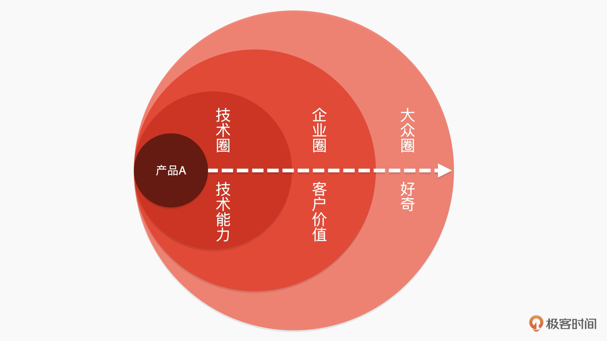

- 00 开篇词 成为下一个万亿市场风口上的操盘人.md.html
- 01 To B市场营销到底是做什么的？.md.html
- 02 To B消费心理学：如何把握客户CEO心理，让他买单？.md.html
- 03 第一印象（上）：如何策划一场产品发布会？.md.html
- 04 第一印象（下）：如何策划一场产品发布会？.md.html
- 05 Leads：如何成体系地寻找高质量的Leads？.md.html
- 06 案例：怎样0成本把一个新产品的市场认知率做到百分之76？.md.html
- 07 产品世界观：如何构建一个好的对外产品故事体系？.md.html
- 08 口碑：如何打造一个有影响力的Demo？.md.html
- 09 后疫情时代，如何做To B市场品牌内容的线上转型？.md.html
- 10 如何用“周边”产品构建To B影响力？.md.html
- 11 打造案例（上）：如何做优质客户案例的选型和内容构造？.md.html
- 12 打造案例（中）：如何引发现象级讨论，打赢PR战役？.md.html
- 13 打造案例（下）：如何通过营销战役把商机转化为销量？.md.html
- 14 颜值美学：如何体现To B产品营销的设计感？.md.html
- 15 如何给企业讲一个“降本”的故事？.md.html
- 16 如何给企业讲一个“增效”的故事？.md.html
- 17 市场中的禁忌：To B营销中容易犯哪些错误？.md.html
- 18 To B营销的阵地：我们在哪里说话，也很重要.md.html
- To B会客厅 SDR是如何优化线索跟进策略，提升销售效能的？.md.html
- To B会客厅 如何通过整体营销迎接后疫情时代的市场挑战？.md.html
- 结束语 一个To B的市场人应该具备怎样的特质？.md.html
- 捐赠
04 第一印象（下）：如何策划一场产品发布会？
你好，我是曹林。
上一节课里，我重点讲的是如何理解产品、完成产品发布的卖点提炼和产品PPT的初步制作，其实这些操作背后的逻辑就是：要做好一场产品发布会，首先要对产品反复挖掘。正如著名摄影师罗伯特·卡帕（Robert Capa）的名言，你没有拍到好照片，是因为你还不够近！
很多市场同学在做一个产品发布的时候，会有三不懂：不懂产品、不懂市场态势、不懂用户。所以，就只能把发布会变成一场不痛不痒的活动。但事实上，办好一场发布会需要对产品极深的理解，对市场极其丰富的了解，还有对竞争对手极熟悉的嗅觉。
那么从这节课开始，我们就要正式进入发布会拉开序幕的周期了（从这会儿就要开始花钱啦）。
第四~五周：预热、关注、好奇
产品发布会能不能一炮打响，预热是非常关键的，还是回到我们上一节课中提到的企业沟通类的产品极客×信的发布来举例，预热一般有两个步骤：露出和超话。
露出
第一步，通过不断露出的方式，建立预热的土壤。我们的目的是和大众开始初步的接触，投放一些印象。在这一步，我们的传播通稿可以围绕在技术/企业圈混脸熟、打造产品经理IP、传递产品领先性等方面展开。
例如，我们在产品发布会的策划阶段，就要利用一个社会现象来做策划，我们选了通过“90后新管理者，能不能管好人？”这个社会现象，来露出我们的产品。当然，你也可以选择其他的现象，这只是一个案例。
PR上，想要开始在技术/企业圈混脸熟，就得天天发稿子，要不断地放出一个声音，用反复的真理来输出观点。比如，“90后管理者的困惑，应该用技术来解决”（这是我们策划的观点，也可以是别的观点）。针对这一点，我们可以反复地输出“90后管理者都很苦，传统的管理手段已经不适合于他们”来引发共鸣。
混好脸熟后，我们还要“用人说话”，打造技术/产品经理的IP。常用的手段就是请产品经理在各个媒体发声、立Flag。举个例子，我们可以讲“解决90后管理者管理困难的路径是数据驱动，以产出为机制管理”，这个也是我们策划的一部分。
预热的时候，我们不能把所有的底牌都放出去，但是却必须在保持产品的神秘感的基础上，不断地传递产品的领先性。比如，我们可以通过预热文这种形式，深入浅出地讲解自动化分析产出能够为管理带来什么价值。最后的目的是让大家认同这个策划，让他们的讨论内容聚焦到你策划里的内容上（“90后管理者的困惑，应该用技术来解决”）。
超话
有了现象，就要让大家讨论起来了。因为不讨论，现象就不热，没有争议，也就没有关注。
所以我们的第二步，就是要造“超话”，这里的超话不是指的微博超话打榜（只是借用了它的概念），而是我们要不断的建立话题，要有共鸣、有争议、有宽度，在探讨中形成产品心智。超话的目的就是引发争议，让讨论的过程变成互动的一部分。那么如何形成我们的超话呢？
要想做到话题有共鸣，我们就需要保持和用户一致的痛感。
对于这个产品来说，普通员工并不是我们的客户，但在这个案例里却可以是我们的盟友。对于员工，我们要打的共鸣是：公平。因为工作产出结果数据化了，这本质上就是在追求公平。那么对于管理者，我们要打的共鸣是什么呢？是效率。管理者并不那么care公平，但是他关注产出的效率。这就是保持和用户一致痛感带来的共鸣。
有了共鸣还不够，一个毫无争议的事情，一个从原则上到事实上都完全正确的事情，是很难获得热议的。所以，要吸引大家的关注，我们有必要引发一场有争议的讨论。
我们可以通过不同观点的文章、自媒体，引导话题（如《机器管理人，靠谱吗？》《数据化管理，目前能实现吗？》）挑战大家的神经，刺激大家的感官。
除了有共鸣、有争议之外，我们的话题还必须有宽度，也就是说，我们不光要在主航道上发声，有时候也要适当“偏离”一下，让大家的声音更加活跃。比如，这样一个核心功能的产品，一定会引发很多的忧虑，但是没关系，我们要让不同的声音飞一会。
通过这样的预热，实际上会引发大家一个好奇：什么软件可以有效解决90后管理者管理95后的问题？这样就顺理成章地引入到我们的产品发布会环节了。
第六周：产品发布会
你一定会非常关心，做发布会是线上好，还是线下好？在什么地方发布？不同的发布会效果上有什么区别，适配什么样的产品？
如何选择发布会类型？
那我们就来看看不同类型的发布会都有怎样的特点。一般情况下，我们有直播型发布会、独立型发布会、参加行业峰会这三种选项。
直播型发布会比较适合于两种情况。第一种是无需部署的、用户能够直接上手功能简单的产品（企业的SaaS应用等）；第二种是产品功能更新（可以通过远程进行安装部署）。这两种类型的产品更容易形成转化。直播型的发布会最轻盈，优点是能够同时开出多个场子，经济指数高；缺点就是缺乏沉浸体验，观众注意力和观看时长不够理想。直播型发布会像一个平底锅，它能够影响最广泛的受众，但是对于受众很难打得足够深，用户的停留时间也不会特别长。
从体量来说，独立召开型发布会是最重的。它的优点是非常地聚焦，体验感好，目标感清晰，但经济投入也是最大的，适合于重大产品/策略的发布会。同时，因为整个活动时间可以做到2~3个小时，所以产品发布会的信息量可以做得比较大，就像我上一节课中说的一样，一般独立做这个事儿的，都是战略级产品。
在行业峰会主会场/分会场发布也是一种常见形式，利用大会主办方的流量，快速宣传自己的新产品，目前华为/阿里/腾讯都在走条路。这个方式的缺点在于信息极其容易分流，因为在整个会务期间，声音太多了。所以，通过这种方式做发布，对于产品本身的要求是最高的。就比如华为，通常会在这种大会上发一些现象级的产品，例如芯片/自动驾驶等自带话题的产品。
在这个教学案例里，我们选择独立型的发布会来进行这个战略级产品的发布。
一个发布会由哪些模块构成？
一个发布会通常会有2~3个小时，一般产品发布会最多在其中占50分钟的时间。一个典型的发布会流程往往分为五步。
第一步，邀请一个本方向的专家学者，或者重要的KOL，让他谈谈对这个行业的理解，同时为咱们要发布会的新产品站台，吸引流量，吸引眼球，预计耗时约30分钟。这段时间里，这个KOL的金句极其重要，最好事先设计一些可以用来进行报道的，帮助KOL植入进去，不用太多，3~5句即可。
第二步，是产品发布环节，由我们的产品经理或者发布人进行产品的发布。一般情况下耗时约50分钟。具体内容遵循我们上一节课讲过的“333原则”即可。
第三步，是典型客户/内测客户的分享，请他们来谈谈最佳实践，耗时约20～30分钟。这里你需要注意的是，客户分享一定要原汁原味按照的客户语言来描述，因为客户的视角代表了绝大多数用户的视角。我们可以调整话术，但是一定要保持视角不变。
第四步，是产品互动与QA，回答现场客户的问题和记者媒体的问题，耗时约30分钟。
第五步，安排一批优质媒体，一对一、点对点地专访产品经理以及相关负责人，耗时约40分钟。
QA和专访，事实上是非常重要的，这代表着用户&公众最关心的问题，在发布会上还没有得到完全的解决。
所以，在QA和专访的阵容上，我们一定要注意，我一般会采用“产品+技术+商务”的部署方式，让产品同学回答功能的问题，技术同学回答技术能力的问题，商务同学则回答企业价值、商业价值的问题。如果产品本身具备一些敏感性，我可能还会额外配置法务的同学在现场。
第七~八周：如何让影响力持续下去？
发布会结束以后，我们的工作并没有结束。我们还要建立产品人设，再次通过发起营销战役（视情况而定），提供利益点，搅动客户，搅动行业，形成心智。
其中，最核心的发声力量就是我们的媒体，我们在发布会里邀请了各种各样的媒体。所以，这个时候分层传播就显得相当重要了。
一个爆款产品发布，必须具备在“三个圈”上发力的能力：
- 技术圈：具备技术领先性，代表了新技术的趋势和方向，能够引起广泛的关注。
- 企业圈：能够具备显现的客户价值，能解决海量客户最棘手的问题。
- 大众圈：能够引发广泛的好奇，具备戏剧冲突，同时具备超低的理解成本。

想要达到这样的结果，通常情况下一个发布会后，你的稿件需求如下：
- 一篇产品发布稿件：主要内容是时间、地点、人物，发布了什么产品，核心功能是什么，用户是谁，这些基本信息。这篇稿件需要言简意赅，以通稿的形式公布消息。
- 三篇分析稿：主要内容是分析这个发布的产品对于行业、用户、技术领域带来的价值。
- 四篇观点稿：用来论述这个产品发布的社会价值和大众价值。
这些稿件是必备的，这几个稿件代表了“我做了什么？”“要产生什么样的影响？”“在行业、用户那里有什么用？”“产品在社会上的价值”。
反复透出这几篇稿件，我们就能清晰地把整个产品的价值从不同维度、不同立面传递出去。
查漏补缺：从做发布会到做“好”发布会
在做发布的两个月里，我相信每一个同学都是披星戴月，面临诸多琐事挑战和一系列的变化。但是，做完了上面的流程只算是做了，只有做出现象了，才算是做好了（现象和爆款是我会反复在不同场景中提到的两个词）。
我们应该在这忙碌的两个月里，时刻检查自己的工作。看看这次发布会，在各个环节里，我们有没有做到：
- 一个可以在30秒内被人讲述、被人传唱的现象。
- 一个看得见摸得着的Demo（后面我会单独讲如何做Demo）
- 三句广为流传的金句。
- 行业里的热议，让每一个人都能够在这个事情上有话说。
如果没有，请你尽快查漏补缺。因为只有做到了上面几点，才有可能让大家记住一个发布会。举个例子，回到我们的第一个仰望的发布会——苹果iPhone的第一次亮相：
- 30秒内可以传唱的对象：滑动解锁。
- 一个看得见摸得着的Demo：通过地理位置系统给披萨店打电话。
- 三句广为流传的金句：乔布斯金句还少吗？
- 热议：看看第二天在苹果店门口排队的人。
总结
现在，我来为“如何做产品发布会”的内容做个整体总结。
在这两节课里，我们把一个发布会的完整路径跑了一遍。从项目立项，产品底料的提炼，到PPT撰写，对外传播方案，以及发布会流程等事项，其实你可以发现，我们并没有把一个发布会看成是一个“发布会”，而是把它看成了一次产品和客户相处的沟通。
- 客户遇到了什么？
- 客户需要什么帮助？
- 我们可以提供什么？
- 我们又要以什么成本提供？
- 能够解决客户的问题吗？
- 还有同类方案吗？
- 为什么是我们来解决？
- 我们解决的优势是什么？
每次当我问自己很多问题，就会发现很多困惑会清晰起来。在慢慢解答这些问题的过程中，我们就会形成自己的一套有效的解题思路，而这套思路本身的价值，远远大于我们今天探讨的过程。这才是我希望用发布会这个案例讲的知识和理解。
场景练习
在今天的场景练习环节，我想请找出你身边或者你公司一个即将发布的产品，按照咱们上面的流程，写出、提炼核心发布要点，并形成一个虚拟的发布会工作笔记。
欢迎在留言区写出你的想法，在部落里分享自己的笔记，与其他同学相互讨论学习。如果你觉得有所收获，也欢迎你把这一讲分享给你的朋友。
© 2019 - 2023 Liangliang Lee. Powered by gin and hexo-theme-book.